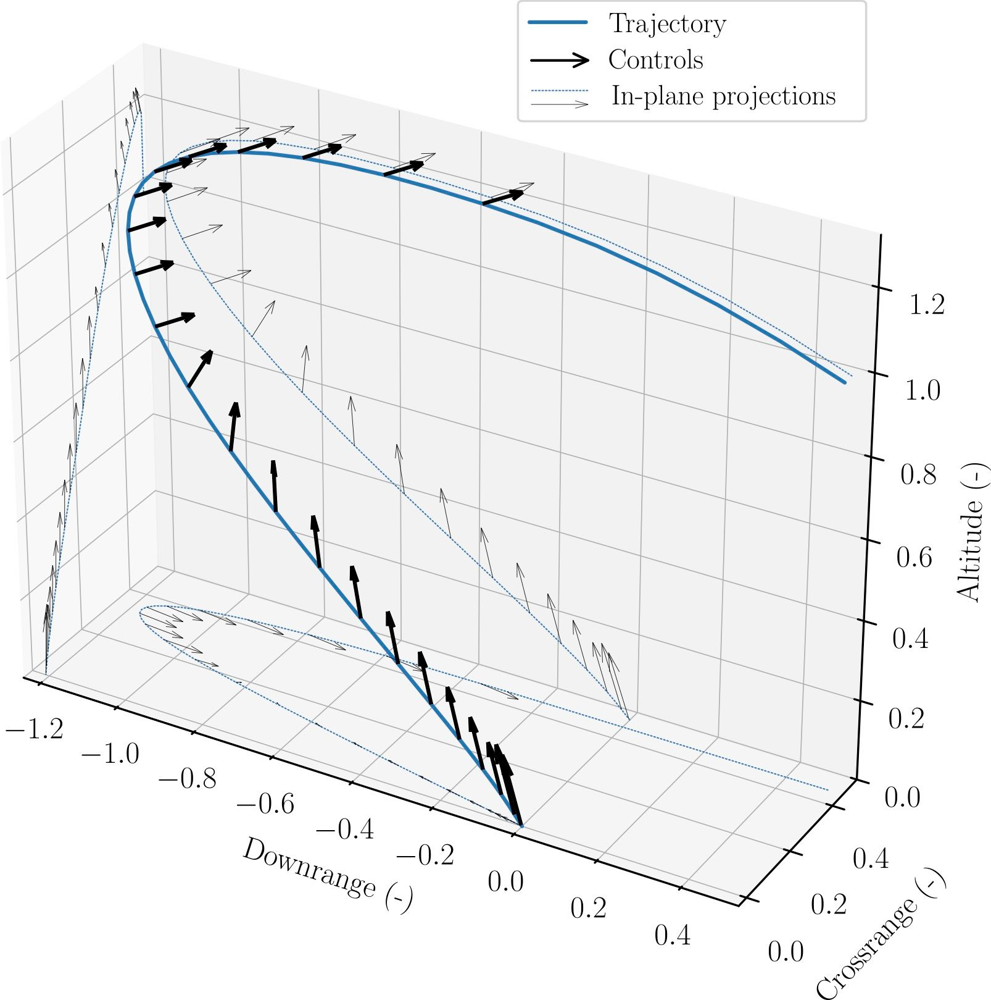

Discrete Lossless Convexification
Exact convex relaxations for discrete-time optimal control.
Overview
Lossless convexification is one of the lab's central results. Certain nonconvex optimal control problems can be relaxed into convex problems whose solutions remain optimal for the original problem. Fuel-optimal rocket landing with a minimum-thrust constraint is one example. This is what makes onboard real-time solution possible.
The classical theory is set in continuous time. Flight software works in discrete time. This project extends lossless convexification to discrete-time problems with thrust pointing constraints, bringing the theory closer to implementation.
The result is real-time-capable guidance with optimality guarantees that hold for the discretized problem the flight computer actually solves.
Results & media
The project extends lossless convexification into the discrete-time problem the onboard computer actually solves.
Pointing-constrained discrete guidance
DLCvx formulates a convex relaxation for discrete-time nonconvex optimal control problems and gives conditions under which the relaxed solution satisfies the original constraints at grid points. The pointing work extends that theory to annular-sector control.
- ProblemDiscrete-time optimal control with pointing constraints.
- GuaranteeConditions for when the relaxed solution satisfies the original nonconvex problem.
- CodeNotebook-based demonstration for pointing-constrained DLCvx.
